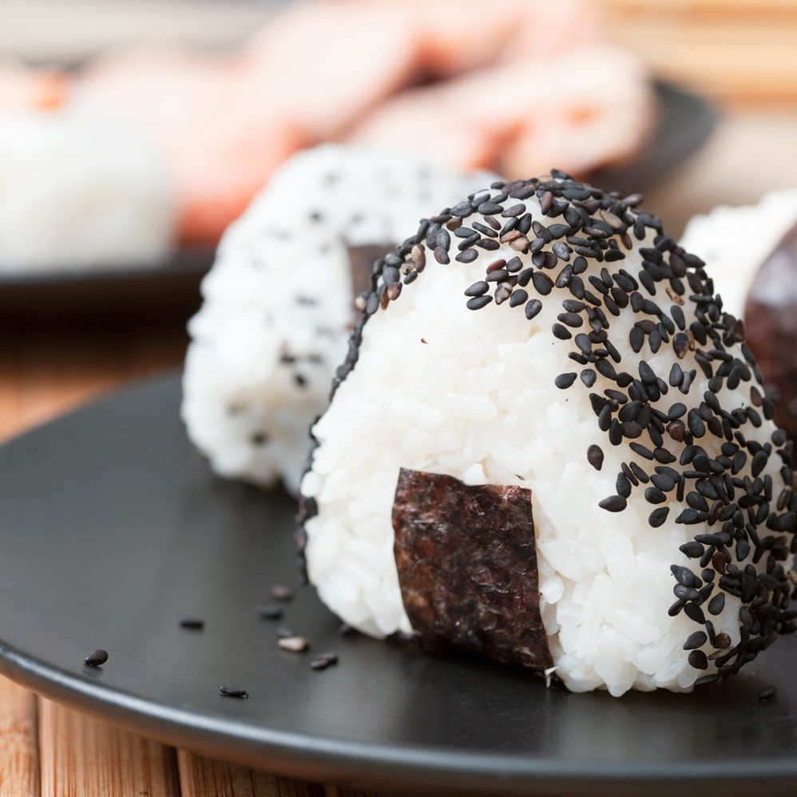
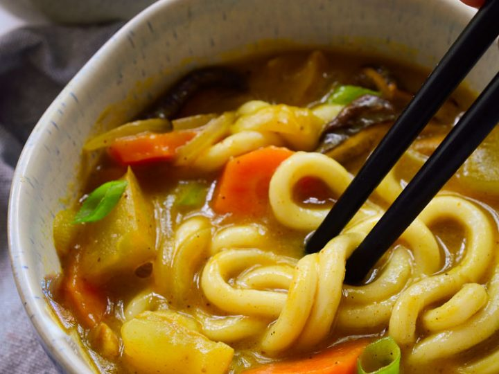
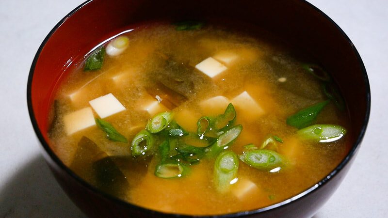
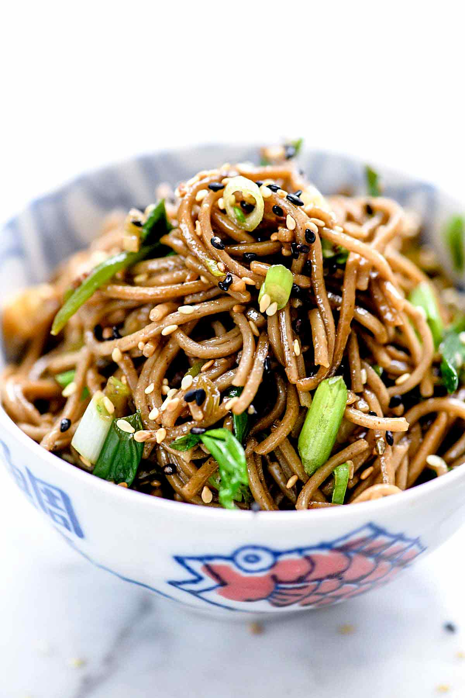

| Name | Recipe | |
| Yaki Onigiri |  | Gather all the ingredients. Cook the rice in the rice cooker, pot over the stove top or pressure cooker.Let the cooked rice cool a little bit until you can hold rice without burning your hands. Do not let the rice completely cool down.Make Onigiri into triangle shapes. First wet both of your hands with water so rice won't stick. |
| Curry Udon |  | Make dashi (homemade, which takes just 30 minutes, or dashi packet, or dashi powder). Stir fry the onion and your choice of protein in the frying pan. Add the dashi and curry roux in the frying pan. Cook up udon noodles in a separate pot. Assemble drained udon noodles and curry sauce in a serving bowl. |
| Miso Soup |  | In a medium saucepan over medium-high heat, combine dashi granules and water; bring to a boil. Reduce heat to medium, and whisk in the miso paste. Stir in tofu. Separate the layers of the green onions, and add them to the soup. Simmer gently for 2 to 3 minutes before serving. |
| Soba Noodle Salad |  | Gather all the ingredients.To make the dressing, combine 1 Tbsp. vegetable oil, 3 Tbsp. sesame oil, and ½ tsp. crushed red peppers in a small saucepan.Whisk all together and infuse the oil over medium heat for 3 minutes. Alternatively, you can put these ingredients in a small microwave-safe bowl and microwave for 3 minutes. Set aside to let it cool a bit; be careful while handling as it'll get very hot.Add 3 Tbsp. honey and 3 Tbsp. soy sauce to the oil mixture.Whisk all together until honey is completely dissolvedBring water to a boil (You do not need to salt the water for cooking soba.). Cook the soba noodles according to the package instructions, but make sure they are al dente. Drain into a colander and rinse the soba noodles under cold running water. This step is important to remove the starch from the soba noodles. Drain well and transfer to a large bowl.Thinly slice the green onions and chop cilantro into small pieces.Combine the soba noodles, dressing, green onion, cilantro, and sesame seeds in the bowl.Toss everything together. Transfer to a serving bowl or plate. Serve chilled or at room temperature. |